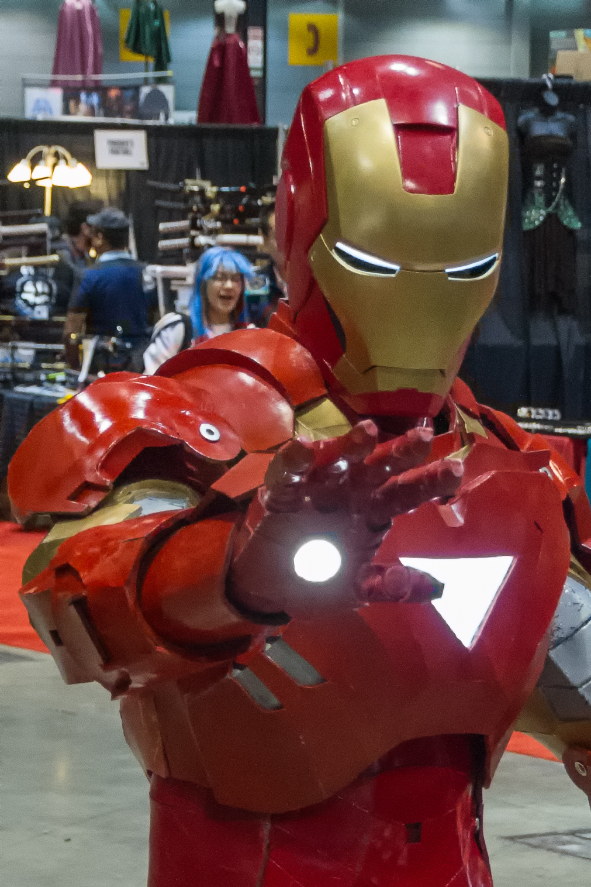

Iron Man is a fictional superhero who wears a suit of armor. His alter ego is Tony Stark. He was created by Stan Lee, Jack Kirby and Larry Lieber for Marvel Comics in Tales of Suspense #39 in the year 1963 and appears in their comic books. He is also one of the main protagonists in the Marvel Cinematic Universe. In the later comic books, Stark took an experimental virus called "Extremis" which allowed him to control his suit with his mind and summon it wherever he was. Stark would eventually develop an armor that he could store in his body. This armor was known as the "Bleeding Edge Model 37".
